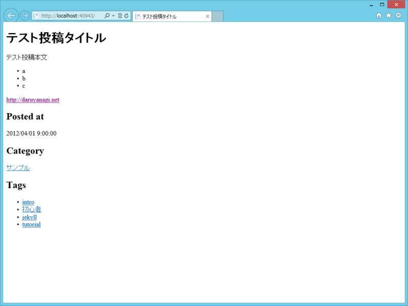

WebMatrix/ASP.NET Web Pages で Jekyll っぽいものを
執筆日時：
GitHub - jekyll/jekyll: Jekyll is a blog-aware static site generator in Ruby というのは、Markdown ドキュメントを置いておくとそれを HTML に変換しておいてくれる静的コンテンツの生成システムらしい。
Jekyll ドキュメントはこんなかんじ。
--- layout: post title: テスト投稿タイトル date: 2012-04-01 09:00:00 category : サンプル tags : [intro, 初心者, jekyll, tutorial] ---テスト投稿本文
- a
- b
- c
Markdown テキストの先頭に YAML Front-Matter と呼ばれる設定を書いておけば、タイトル・レイアウト・投稿日時・カテゴリ・タグといったメタデータを付与することもできる。なんだか便利臭がプンプンするぜ。
さて、これを WebMatrix で HTML ドキュメントに変換してみようというのが今日のお題。SignalR + WebMatrix でサーバーフォルダの監視を行ってみる - だるろぐ などと組み合わせたら面白いものができそうな気がする。
必要なライブラリ
- MarkdownSharp
- YamlSerializer for .NET（WebMatrix/ASP.NET Web Pages で YAML を扱う - だるろぐ）
どちらも NuGet で取得できる。
サンプルコード
先ほどの Jekyll ドキュメントを ~/Default.md としておき、これを ~/Default.cshtml で読み込んで変換・表示してみる。あくまでもサンプルなので、汚いところ、あからさまにダメなところは無視してほしいかな（笑
@using System.Text.RegularExpressions @using System.Yaml@{ var path = Server.MapPath("~/Default.md");
var s = System.IO.File.ReadAllText(path);
// YAML Front-Matter を抽出する適当な正規表現 var r = new Regex("—.+—", RegexOptions.Singleline);
// YAML Front-Matter を取得（エラー処理なし！）
/* 配列として受け取る → 先頭はマッピング（ハッシュ）のはず */ var node = YamlNode.FromYaml(r.Match(s).ToString())[0] as YamlMapping;
//YAML Front-Matter の値を変数に格納する
/* スカラ（値）の場合 */ var title = (node["title"] as YamlScalar) .Value; // <- 生テキスト！ var date = (node["date"] as YamlScalar) .NativeObject; // <- DateTime! var category = (node["category"] as YamlScalar).Value; var layout = (node["layout"] as YamlScalar).Value;
/* シーケンス（配列）の場合 */ var tags = (node["tags"] as YamlSequence) .Select(_ => (_ as YamlScalar).Value);
// YAML Front-Matter を除去（危険が危ないデシ！） s = r.Replace(s, string.Empty);
// 残りは Markdown ドキュメントです var m = new MarkdownSharp.Markdown(); var text = m.Transform(s); }
<!DOCTYPE html>
<html lang="ja"> <head> <meta charset="utf-8" /> <title>@title</title> </head> <body> <h1>@title</h1>
@Html.Raw(text)
<h2>Posted at</h2> <p>@date</p>
<h2>Category</h2> <p><a href="~/Category/@category">@category</a></p>
<h2>Tags</h2> <ul> @foreach(var tag in tags) { <li><a href="~/Tag/@tag">@tag</a></li> } </ul> </body> </html>

なんとなく動いてるっぽい。